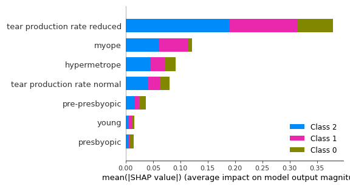

How does lens check work?
Lens Check is an application which makes recommendations on which type of lenses or glasses you should buy.
The program has learned import aspects when in comes to lenses by learning other people their experience.
When you answer the questioner it will compare your data to their data and a recommendation.
How accurate is the prediction?
The model, a neural network, we currently use has an accuracy of 97% on predicting the best recommendations.
Although this is a really high accuracy lenses are really intresult, and it sometimes just comes down to personal preference.
So keep in mind this is a recommendation and not leading in making your decision.
The image below shows the feature importance of my neural network.

Dataset
The original dataset consists out of the eye conditions and there preferable type of lenses or glasses.
The dataset was cleaned and was analyzed through.
The dataset had only 80 rows of data and had to be synthesized to create more instances.
This was done by the SDV library which increased the size to 300 hundred rows.
Data privacy
Your data only exist temporary on our server and will be deleted immediately after the prediction is done.
Furthermore, your data arrives anonymously on the server, so it can't be traced back to your name.
Contact us:
If you have any questions or would like to give feedback, which I really appreciate, please email to this account: .
n.wijsman@student.avans.nl